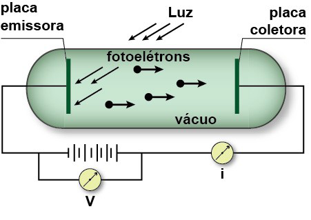
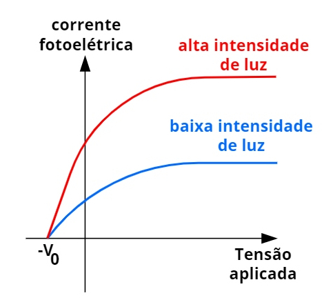
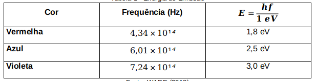
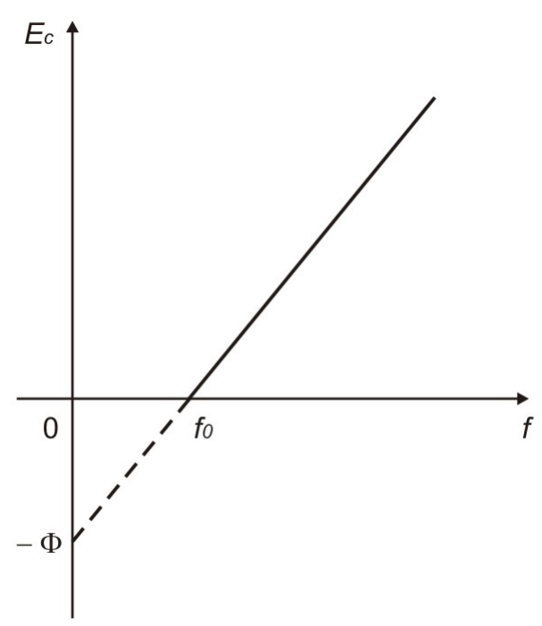

Segundo Cardoso e Dickman,
O efeito fotoelétrico, explicado por Albert Einstein em 1905, e considerado um dos fenômenos cujo entendimento marca o início da física quântica, consiste na ejeção de elétrons de uma placa metálica [além dos metais, semicondutores, como o silício, são passíveis de sofrer o efeito também, quando devidamente dopados], quando a radiação incide sobre esta. (2012, p. 904)
E continuam Valadares e Moreira,
Radiação com freqüência abaixo de um certo valor mínimo não promove elétrons livre, não importa a intensidade da luz. Essa intensidade corresponde à potência emitida pela fonte luminosa. A luz, além de apresentar um comportamento ondulatório, pode ser pensada como uma forma de energia transmitida por partículas denominadas fótons. (...) Quanto mais intenso for um feixe de luz, maior é o número de fótons nele presente. Quando o feixe incide sobre a superfície, cada elétron preso tem uma certa probabilidade de interagir com um fóton. Se a energia hf do fóton for maior que a energia de ligação do elétron, denominada função trabalho, este pode ser libertado absorvendo toda a energia do fóton incidente. O valor de função trabalho depende do material da superfície. Assim, para cada material, o efeito fotoelétrico ocorrerá apenas a partir de um valor mínimo da freqüência f. De nada adiantará aumentar a intensidade do feixe de luz se a freqüência do fóton for menor do que este valor mínimo. (1998, p. 122-123)
Esse princípio físico estudado por Einstein não só impacta a tecnologia e sua evolução, mas também a Física em si e o novo olhar sobre a luz.
Heinrich Hertz é considerado o primeiro a observar o EFE, mas com as limitações da Mecânica Clássica de sua época, foi impossível a ele aprofundar o assunto. Como foi visto por seu aprendiz Philipp Lenard em seu experimento, as implicações surgiram em relação ao efeito depender da característica “frequência” da luz, e não da intensidade; à instantaneidade da ocorrência do efeito ou da função trabalho de cada material.
O principal ponto que a Física Clássica era incapaz de explicar se mostrava ao medir a corrente elétrica do circuito ao variar a tensão exercida pela alimentação, necessariamente quando esta variação tornava a DDP negativa e invertia a polarização do circuito. Com o auxílio visual da figura anterior: quando a tensão é exercida positivamente, os fotoelétrons migram da placa emissora para a coletora; porém, quando a tensão é exercida negativamente, a própria placa emissora atrai os fotoelétrons que se ejetaram, e se a tensão for diminuída ainda mais, chegará ao ponto em que nenhum fotoelétron conseguirá ser ejetado, apesar da influência da luz.
Quando a tensão é positiva, o que determina a intensidade da corrente é necessariamente a intensidade da luz incidente sobre a placa emissora. Mas quando a tensão é negativa, o ponto o qual nenhum fotoelétron consegue escapar da placa emissora é o mesmo, independente da intensidade da luz emitida.
A introdução de Planck sobre os quanta não fora bem vista pela comunidade científica. Afinal, com aquilo ele propusera quebrar paradigmas construídos por séculos. Einstein explica cada ponto deixado em branco por Lenard com base no conceito de quantização, tornando aplicável a teoria de Planck pela segunda vez e firmando a Mecânica Quântica ao induzir a medição da Constante de Planck novamente por meio do EFE, independente da história da emissão do corpo negro. Tal medição foi feita por Millikan 11 anos após os postulados de Einstein.
Eis os pontos:
- A Física Clássica via o experimento como uma panela de água esquentando: quanto mais a energia é acumulada, mais próxima estará a água de ferver (ou os elétrons de se ionizarem); e quão mais intensa a fonte de energia (a luz), menos tempo isso leva.
- Entretanto, a emissão dos fotoelétrons é instantânea necessariamente pela ionização dos elétrons não ser contínua, mas quantizada. Ao considerar que cada fóton é uma partícula quantizada, ou seja, só cede sua energia em sua totalidade ou não cede nada, e que só se relaciona com um único elétron, Einstein faz com que cada fóton ionize seu respectivo elétron sem interferir na ação de outros, o que não gera uma “fila de espera”, e o efeito ocorre instantaneamente.
- A energia de um fotoelétron, pelo fato de os fótons serem quantizados, nunca dependerá da intensidade da luz incidente, pois cada fotoelétron só absorverá a energia de um único respectivo fóton. A energia que cada fóton contém é determinada pela sua frequência, como será visto adiante.
- Alguns materiais ionizam-se com menor ou maior frequência de acordo com suas funções trabalho, o que determina a frequência de corte de cada um. A intensidade nada fará diferença se a frequência da luz incidente for menor que a frequência de corte. Ao passo que, invertendo as condições, a intensidade interfere no número de fotoelétrons, enquanto frequências maiores traduzem-se em fotoelétrons mais energéticos.
A partir da notação E=hf, é possível descobrir a frequência de luz necessária para vencer a função trabalho (ϕ) [A energia da função trabalho é medida em elétron-Volts (eV), pois é considerada uma grandeza de escala muito pequena. 1 eV corresponde ao valor de uma carga elementar (1,6 * 10^-19 C) submetida a uma tensão de 1 Volt.] de certos materiais.
ϕ=hf
O resultado de uma medição de função trabalho de um material pode variar de acordo com o método realizado, com a pureza dos objetivos e n outros fatores. Eis uma lista de funções trabalho, em inglês, considerando essas margens de erro, de um número considerável de elementos.
Lembrando que a energia que o fotoelétron possuirá obedecerá a diferença entre a energia fornecida pelo fóton e a energia necessária para que a quebra de ligação ocorra: a energia máxima que um fotoelétron poderá obter, considerando que a frequência da luz incidente não varie, só ocorrerá com a ionização de elétrons de camadas mais externas, pois camadas mais internas necessitam de energia além da energia padrão da função trabalho. Logo: Kmáximo=hr-ϕ.
Para camadas mais internas, K=hr-ΔE, sendo ΔE>ϕ. Em qualquer caso, se a frequência do fóton for exatamente igual à energia da ligação, o fotoelétron sairá sem energia cinética. Mas no caso do experimento de Lenard, a DDP faria o papel de atrair o fotoelétron de uma placa à outra do mesmo jeito.
Em relação à variação da tensão, assunto anteriormente visto, se a DDP for invertida ao ponto de nenhum fotoelétron conseguir ejetar-se, significa que a própria tensão sobrepôs a energia máxima que o fotoelétron poderia atingir, mascarando um aumento na frequência de corte. Isso significa que o gráfico 2 apresenta dois comportamentos em cada quadrante:
Enquanto a influência da intensidade da luz no primeiro quadrante é explicável pela Física Clássica; no segundo quadrante a independência da intensidade e dependência da frequência não é explicável sem o conceito de quantização.
Recorrendo a um outro gráfico muito importante, a Constante de Planck reaparece como um coeficiente angular ao traçar-se a reta da energia do fotoelétron em função da frequência:
Como o coeficiente angular de uma função linear corresponde à tangente da inclinação da reta em relação à abcissa, h=ΔEc/Δf.